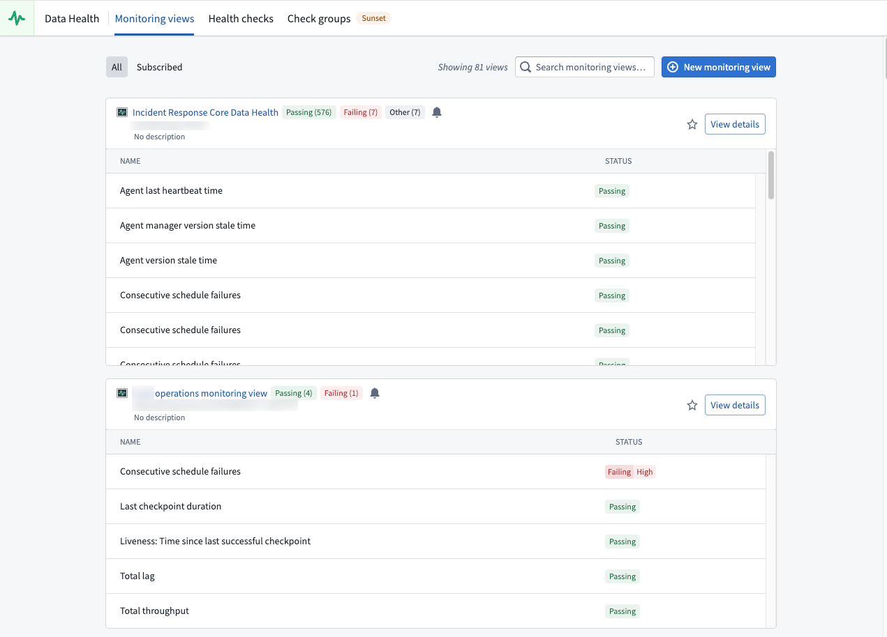

Data Health is a Foundry application for monitoring the health of your platform resources. Use Data Health to monitor and configure robust alerting for datasets, builds, functions, actions, automates and other resource types. When issues are detected, Data Health notifies you through in-platform notifications, email digests, and integrations with external systems such as PagerDuty and Slack.

You can access Data Health from the Foundry sidebar navigation.
Data Health provides two primary feature sets for monitoring your resources:
For high-level guidance on setting up effective monitoring, review the section on maintaining pipelines.
| Feature | Best for | Scope |
|---|---|---|
| Monitoring views | Monitoring many resources across projects with consistent rules | Project, folder, or single resource |
| Health checks | Detailed content and schema validation on individual datasets and schedules | Single resource |
Both monitoring views and health checks generate alerts when issues are detected. You can receive alerts in the following ways:
You can also access health checks directly from individual resources through the Health tab:
In Data Lineage, you can also color datasets by their health check status and view all health checks in the Data Health tab at the bottom of the page.